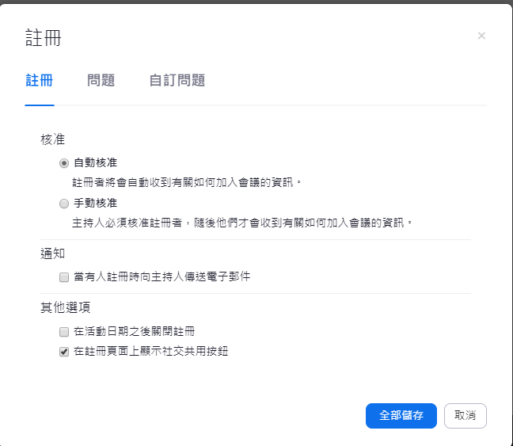

Zoom 這套線上會議軟體，從我一開始使用他到現在，整個的功能與介面都有很大幅度的提升，說實話，如果有線上會議的需求，Zoom 這個服務是一個不錯的選擇，而今天這篇文章來分享一下，Zoom 在建立會議時，可以做到那些事情，在辦線上活動時，又能如何利用這些功能
預約會議
預約會議的功能雖然可以透過桌面應用程式完成，但透過網頁的方式預約會議，能做到更多的事情
-
登入 zoom.us 的網站後台並點選【排程會議】

-
填入會議的相關資訊
-
如果想要利用 zoom 會議功能辦線上活動的人，會議排程項目中的【註冊】功能，就是一個不錯的功能，先啟動起來，之後可以做到更多的設定
註冊
確定儲存後，就會帶到會議的細節設定頁面，這裡會針對剛剛勾選【註冊】可以設定的項目

-
註冊選項可以設定的有

-
也可以檢視註冊者有哪些人
-
電子郵件設定的部分可以設定活動聯絡用的 Email 及窗口名稱，也可以客製化郵件內容
-
當然要更專業一點，可以在品牌化的地方上傳 Banner 與 Logo 的圖，而這些圖也會放到電子郵件中
而活動參加者則可以透過 Zoom 所提供的註冊頁面進行活動註冊
使用者一旦完成註冊，會收到活動註冊成功的信件，當所註冊的活動有所異動或是取消，註冊者也會收到相關的訊息，十分方便
問卷調查
在安排活動時，可以事先輸入想要詢問活動參加者的問題，做一些問卷調查，這些調查的結果也可以從之後的報告中取得
直播功能
Zoom 的 meeting 也有提供直播功能，除了 zoom 本身的會議功能外，也可以直撥到 Facebook、Facebook workspace、YouTube 或是自定的直播服務
會議中
在會議中，主持人可以做的事情有
- 錄影
- 控制參加者的麥克風是否靜音
- 直播啟動與否
- 建立問卷調查
- 開啟分組討論 (另外一篇文章分享)
- 指定聯合主持人
- 分享桌面
參加者可以做
- 分享桌面
- 使用聊天，不論是公開或是針對某人的私下聊天
- 回答問卷等等
報告
開啟註冊功能的另外一個好處是可以在報告的功能中，取得更詳細的資訊，報告的功能是為在 管理員 -> 帳戶管理 -> 報告
當點選報告功能時，可以看到的報告種類其實還不少，管理者看到的報告資訊是全組織的，假如會議有勾選註冊功能，則可以在這 【會議】的分類下看到報表
從這個報表中，就可以產出會議(活動)的報名資訊及問卷調查的結果(民意調查報告)，如果有需要做後續的追蹤，這一個報告資訊其實還蠻完整的
小結
使用 Zoom 這服務也好幾年了，一開始會使用是因為要辦 Angular 線上讀書會，結果一租就租用到現在。如一開始所說的，只要有在使用而且用起來順手，付費的服務都不是問題，因為獲得的價值早已遠大於付出的價格